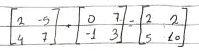

Portfólio de Matemática
Feito por João Fassina
1°Trimestre, 2° ano de Informática
Instituto Federal de Educação, Ciência e Tecnologia do Rio Grande do Sul -
Campus Erechim
Introdução ao Portfólio
O portfólio de matemática é uma forma de aperfeiçoar o conteúdo estudado
em sala de aula, pois para seu desenvolvimento, é necessário estudar o
conteúdo para conseguir entender e explicar ele, podendo trazer os
entendimentos do conteúdo, dificuldades e também pontos interessantes que
foram encontrados.
No portfólio existe três conteúdos, Anuidades, Matrizes e Determinantes.
Todas as coisas do portfólio são baseadas no caderno, as fotos do caderno
estão aqui.
Conteúdo:
Anuidades:
As Anuidades podem ser dividas em duas fórmulas, a fórmula de
Capitalização e a de Amortização.
Uma Capitalização pode se entender como quando você deposita um valor
por parcelas, ganhando uma porcentagem em cima dos depósitos que você
realiza. Por exemplo, se eu ganho 25 reais para o almoço mais um suco,
e eu deposito estes 25 reais no banco durante trinta dias, eu vou ter
750 reais, porém neste banco, você ganha 1% de capitalização todo dia,
ou seja, um juros composto de 1% de lucro em cima do valor presente,
assim deixando você com um total de R$869,62.
Como essa magia de dinheiro infinito funciona?
Isso não é magia, é uma fórmula matemática chamada Capitalização, que
busca trazer o montante de um número de determindados depósitos
iguais.
M = P[ (1+i)n - 1 / i]
- M = Montante
- P = Parcela
- i = Taxa de Juros
- n = Tempo de Capitalização
Uma Amortização como diz no nome é relacionado com algo parecido com a
morte, pagar prestações. Por exemplo compramos um dinossauro por
50.000 reais, e parcelamos em 24 vezes, porém uma parcela de 24 vezes
nessa loja tem juros de 2,1% ao mês, e ao realizar o cálculo você vê
que precisa pagar 2673,60 reais por mês.
Mas como chegamos nesse valor de 2673,60 reais?
Simples! Foi realizado a fórmula da Amortização, que busca trazers
qual o valor das prestações que serão necessárias realizar para pagar
um capital.
C = P[ (1+i)n - 1 / i (1+i)n

Matrizes
As matrizes são uma forma de armazenar números por meio de linhas e
colunas, com intuito de fazer uma imagem ou forma em um plano
cartesiano, ou como eu escrevi de forma bem formal no caderno, "Um
Array, só que com mais colunas".
Composição de uma matriz
Uma matriz é feita por linhas e colunas de números, onde são
atribuidos um "valor" para encontrar a sua posição.
Am*n
- O "A" representa o número que está na matriz, o "m" representa a
linha, e o "n" representa a coluna em que o número A está posicionado.

Aqui temos um exemplo de matrizes, seguindo a lógica anterior, na
primeira matriz, o primeiro valor, A11 é 2; A12
é -5; A21 é 4; e por último A22 é 7.
Soma de Matrizes
Como visto no exemplo acima, uma soma de matriz consiste em somar os
valores de uma matriz, mas somente acontece se o número de colunas da
1° matriz é igual ao de linhas da 2° matriz, ou seja A15 e
A54 são somáveis.
Subtração de Matrizes
A lógica da subtração de matrizes é igual á